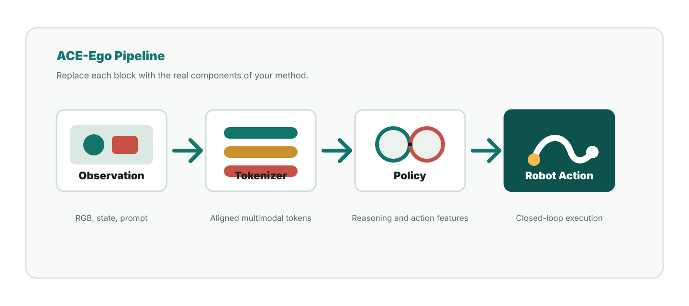

Task Generalization
Summarize the problem setting, training data, and generalization behavior in one scannable card.
ACE-Ego studies how egocentric perception, language-conditioned reasoning, and action prediction can be combined for robust robot manipulation. This page mirrors the structure of modern research homepages: a concise claim, a high-signal teaser, method overview, qualitative results, and citation details.
Swap this paragraph with your paper abstract. Keep the first sentence concrete, describe the core technical idea, and close with the main empirical result or user-facing contribution.
Highlights
Summarize the problem setting, training data, and generalization behavior in one scannable card.
Describe the architectural move that makes the project distinct without forcing readers into implementation detail.
Put videos, success rates, and representative comparisons near the top so reviewers can evaluate the claim quickly.
Method

RGB observations, proprioception, and optional language prompts define the current robot state.
A vision-language encoder produces task-aware tokens for action prediction.
The controller predicts short-horizon actions that can be rolled out in closed loop.
Results
| Method | Seen Tasks | Unseen Tasks | Real Robot |
|---|---|---|---|
| Baseline A | 62.4 | 41.8 | 38.0 |
| Baseline B | 70.1 | 49.5 | 45.6 |
| ACE-Ego | 82.7 | 63.9 | 58.4 |
Citation
@article{aceego2026,
title = {ACE-Ego: Your Project Title Here},
author = {Author, First and Author, Second and Author, Third},
journal = {arXiv preprint arXiv:0000.00000},
year = {2026}
}